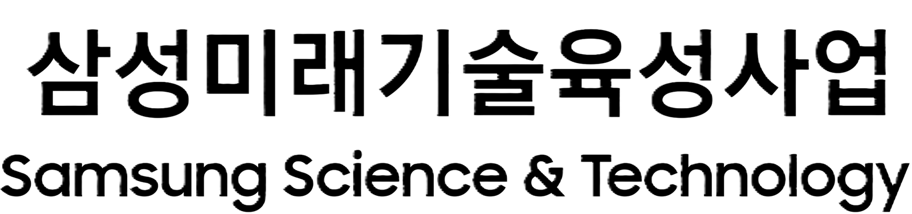
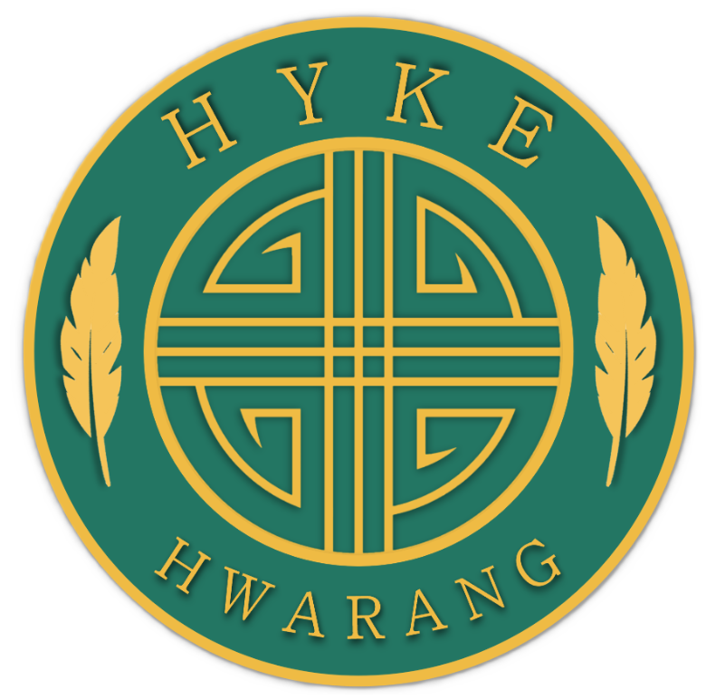

The Future of Mathematics in Quantum Theory
Welcome to the seminar homepage. Here you can find information on organizers, financial support, forthcoming talks, and past seminars.
Organizers
Seung-Yeal Ha (Seoul National University)
HyeungSoo Kim (Samsung Science & Technology Foundation)
Financial Support
- Seoul National University
- Samsung Science & Technology Foundation
- HYKE-Hwarang Research Group



Information
- The seminar will be held at least twice a semester, and it will be operated both in person and online.
- The recorded seminar will be posted on YouTube. You can watch it through the VIDEO link below.
-
Zoom link:
https://us02web.zoom.us/j/2225970001?pwd=vlyW3ueSrRdIGIH5pq9AOhCDwDGhul.1&omn=82667085586
Meeting ID: 222 597 0001, Password: sstf
Forthcoming Speakers
-
YYYY/MM/DD (Time): Name
Title: TBA
Abstract: TBA
Past Speakers
-
2026/04/10 (4:00 PM-4:50 PM): Dong Pyo Chi (Seoul National University)
PDF Title: Quantum computers, Mathematics and Topological Quantum computers
Abstract: This talk explains the computational-scientific understanding of quantum computers and discusses topological quantum computers, which fundamentally address the error problem, the foremost challenge in building quantum computers.
-
2026/04/10 (3:00 PM-3:50 PM): Daniel Kyungdeock Park (Yonsei University)
PDF Title: When Quantum Meets AI: Opportunities and Challenges
Abstract: Recent advances in quantum computing and artificial intelligence have created a rich two-way interaction between the two fields. On the one hand, quantum systems provide new perspectives on representation, optimization, and sampling in machine learning. On the other hand, classical AI methods are becoming increasingly useful for addressing central problems in quantum technologies. In this talk, I will present an overview of this emerging interface from the perspectives of Quantum for AI and AI for Quantum. I will highlight how quantum models may offer new possibilities for prediction and generative modeling, how AI can support large-scale quantum simulation and computation through improved design, inference, and error decoding, and how mathematical tools can provide insight into some of these models. I will also discuss some of the main challenges that remain, including trainability, generalization, scalability, and sample complexity.